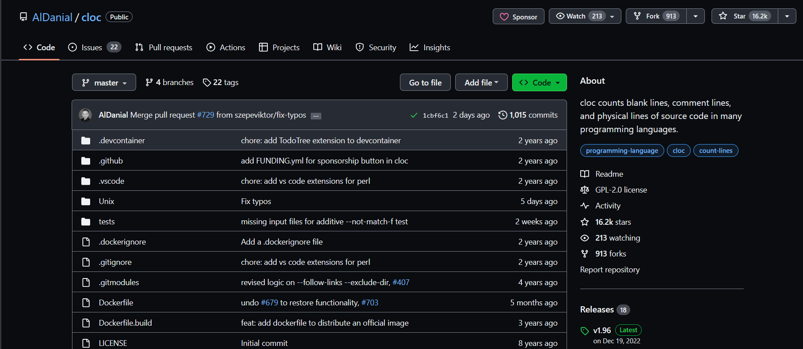
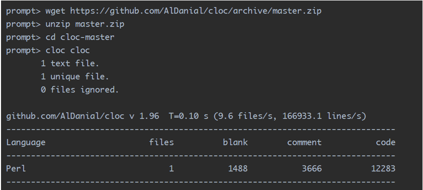
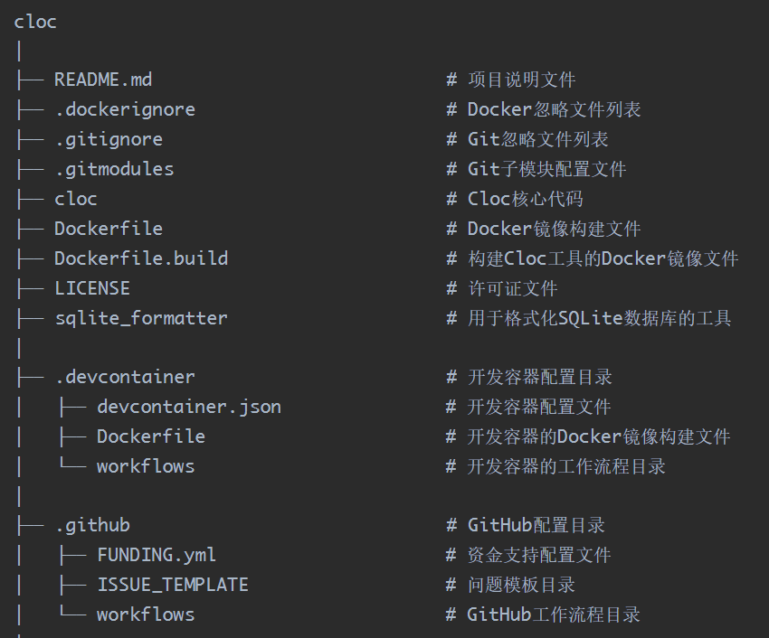
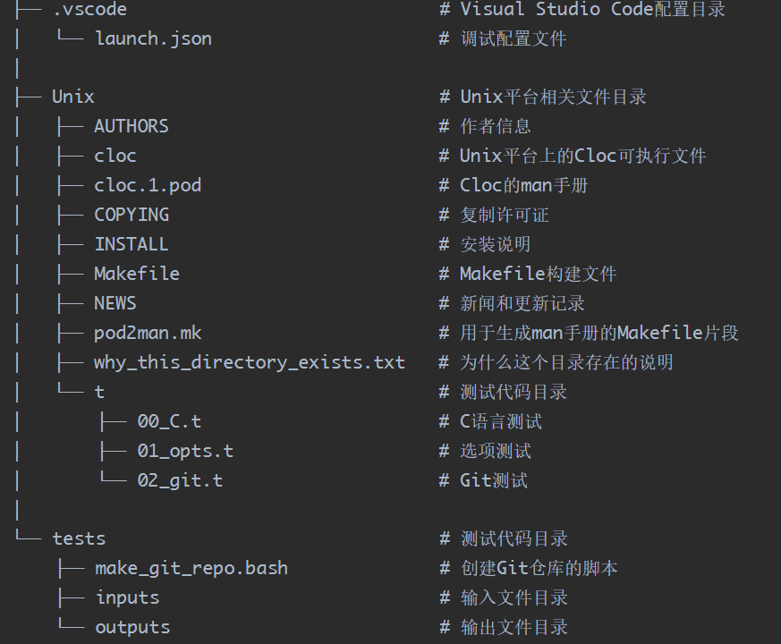
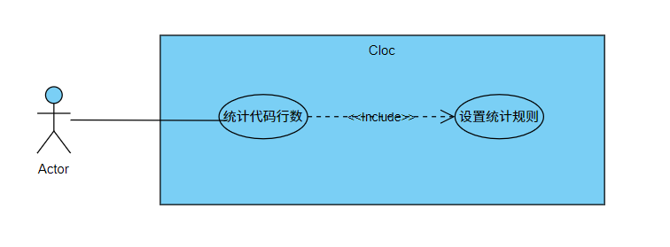
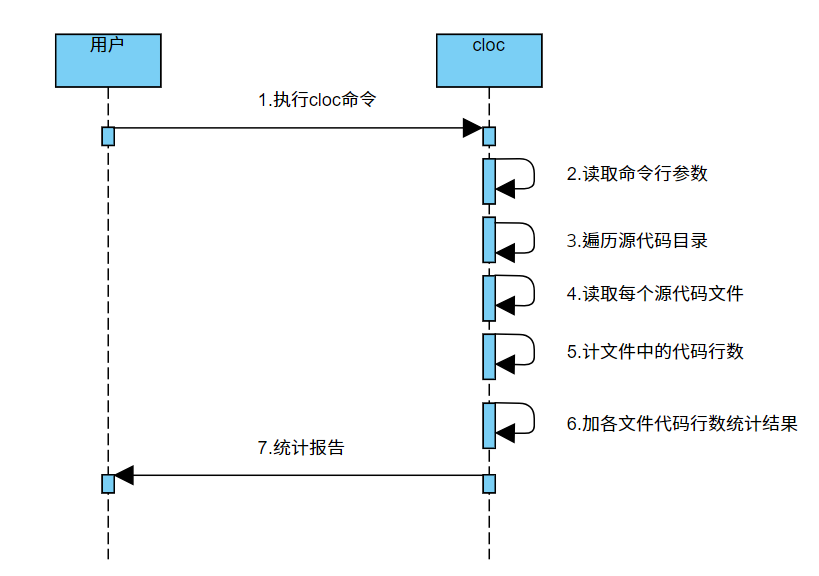
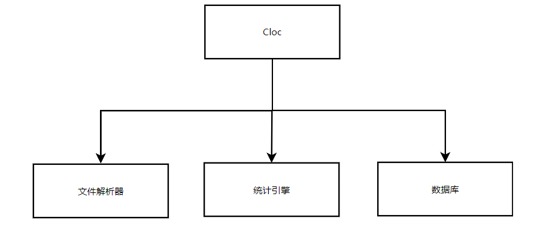

开源项目研究
开源软件：cloc
小组成员：余琦弘 王贺强
软件简介
Cloc（Count Lines of Code）是一种用于计算代码行数的开源工具。它可以帮助开发人员和项目管理人员统计软件项目中的代码行数、注释行数和空白行数等相关信息。
Cloc支持许多编程语言和文件类型，包括C、C++、Java、Python、Ruby、JavaScript、HTML、CSS等。它可以递归地扫描指定目录下的所有文件，并根据预定义的规则进行代码行数的计算。
Github仓库：https://github.com/AlDanial/cloc

源代码的基本信息
总行数
Cloc使用Perl编程语言编写。
使用cloc工具对其源文件进行统计，它的Perl代码一共有12283行。
运行结果

目录结构
GitHub源码结构
目录结构

目录结构

软件功能
用例图

顺序图

软件结构

Cloc：Cloc工具的主模块，负责协调和管理其他模块之间的交互。
文件解析器：负责解析代码文件，提取代码行数、注释行数和空白行数等信息。
统计引擎：根据文件解析器提供的数据，进行统计计算，并生成代码统计结果。
数据库：用于存储和管理Cloc的配置和统计数据。